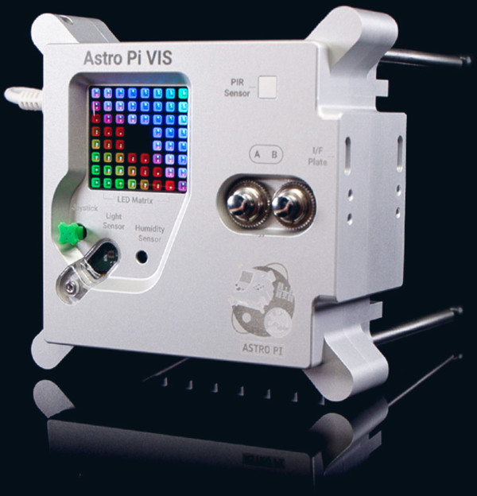
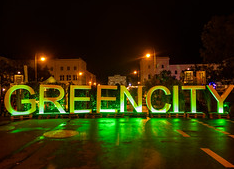

BLOG AND NEWS
"Ideas Driving the Future": Discover innovations and insights
shaping the world of geospatial technologies.
Latest
At the heart of the technological revolution, bold ideas and disruptive innovations are redefining what is possible. From mapping to navigation, geospatial technologies are not only improving our daily lives, but also strengthening our understanding of the world.
Visualizing Floods in the Dominican Republic: An Intuitive Comparison with Juxtapose JS
Category: Disaster Response.
13 May, 2024 by Marina Robredo


Execute your code in space with Astro Pi Challenge
Category: Education.
10 may, 2024 by Alexander Ariza
 The “Run your code in space with the European Astro Pi Challenge” is an educational project by the ESA (European Space Agency) in collaboration with the Raspberry Pi Foundation. It provides young people with the amazing opportunity to conduct scientific research in space by writing computer programs that run on Raspberry Pi computers aboard the International Space Station (ISS). The challenge has two levels of complexity: Mission Zero: Suitable for beginners and school-aged children. Teams write a simple Python program to take a reading using the color sensor on one of the ISS’s Astro Pi computers and display a custom pixel art image for the astronauts on board. Mission Space Lab: For more advanced coders, where teams write programs to solve a specific scientific challenge, such as measuring as accurately as possible the speed at which the ISS travels. Participants receive a personalized certificate showing the exact time their program ran and the position of the ISS during that time. It’s a unique opportunity for young people to get involved in programming and space science in a very hands-on and exciting way. 😊
THE GREEN CITY APP
Category: Smart cities.
10 may, 2023 by Alexander Ariza
 "The Green City": Harnessing Geospatial Technologies for Biomass Analysis" - Dive into the world of geospatial technology with "The Green City," a cutting-edge application designed for Berlin. Utilizing Google Earth Engine (GEE), this app provides seasonal biomass data, empowering users to conduct interactive explorations and customize data layers for a tailored experience. Ideal for students, researchers, and urban planners, it's a gateway to understanding and strategizing for urban biomass sustainability. With its expansion to include industrial biomass sources and a focus on European agricultural residues, "The Green City" stands as a pivotal tool for assessing biomass resources and driving eco-friendly initiatives. Join the movement towards a sustainable future by leveraging the insights offered by "The Green City" on the GeoWay platform.